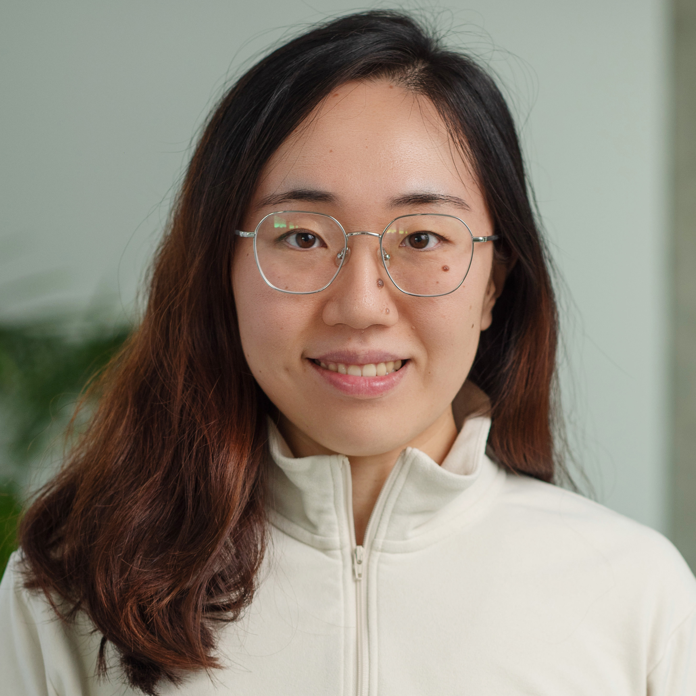
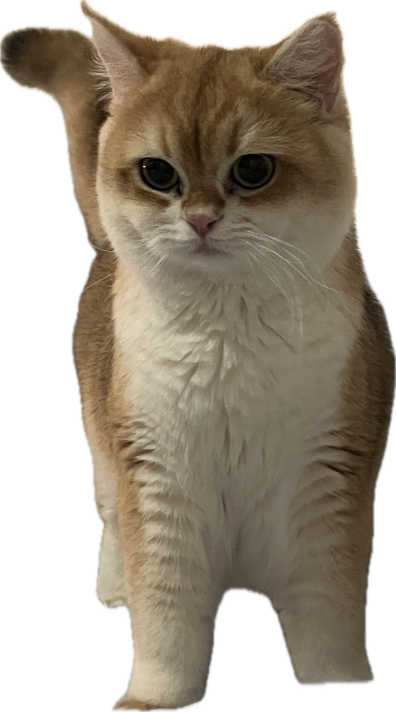
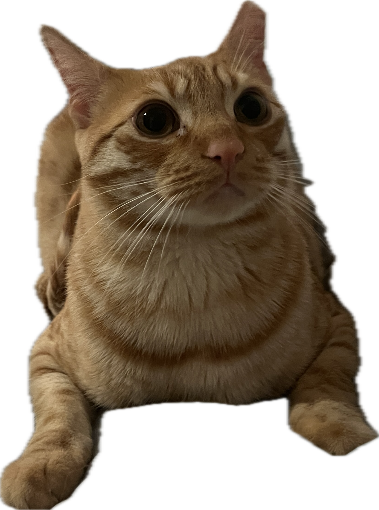

Ph.D. Paul G. Allen School of Computer Science & Engineering, University of Washington

Hi, Loafy!
Hi, Loopy!I am currently a research scientist at NVIDIA. I earned my Ph.D. from the Paul G. Allen School of Computer Science & Engineering at the University of Washington, advised by Yejin Choi, and hold a Bachelor's degree from Colby College. Previously, I was a student researcher at NVIDIA and Allen Institute for Artificial Intelligence (Ai2).
The North Star of my research is to build AI that genuinely benefits humanity. My deeper calling is to inspire and empower young scholars to pursue that same vision and embark on bold intellectual adventures.
A space to share materials that might be useful to others. If you find any of these helpful, I'd love to hear from you!
Liwei Jiang is a Research Scientist at NVIDIA and an incoming Assistant Professor of Computer Science at the University of California, Irvine. She earned her Ph.D. from the Paul G. Allen School of Computer Science & Engineering at the University of Washington, where she was advised by Yejin Choi. She was previously a graduate student researcher at NVIDIA and the Allen Institute for Artificial Intelligence (Ai2). Her research focuses on humanistic, pluralistic, and coevolutionary AI safety and alignment, where she spearheads research on moral and pluralistic value reasoning in language models and develops data-, algorithm-, and system-level solutions to socio-technical challenges in AI safety, security, and large language model alignment. Her work has received Best Paper Awards at NeurIPS 2025, NAACL 2022, and CHI 2024, as well as Outstanding Paper Awards at EMNLP 2023 and the AIA Workshop at COLM 2025, and has been featured in The New York Times, Nature Outlook, IEEE Spectrum, Wired, and other major media. She co-organizes workshops including MP2 (NeurIPS 2023) and SoLaR (NeurIPS 2024; COLM 2025), and co-leads the Guardrails and Security for LLMs tutorial at ACL 2025.
One of my biggest life goals is to inspire and support young people from underprivileged backgrounds, especially the next generation of women scientists, so they can pursue ambitious dreams while staying true to themselves.
I firmly believe that everyone has the potential to achieve anything they set their mind to. Keep going and try again.
Your path is uniquely yours. Follow what ignites you. Every twist, every turn, every unexpected direction is exactly where you need to be.